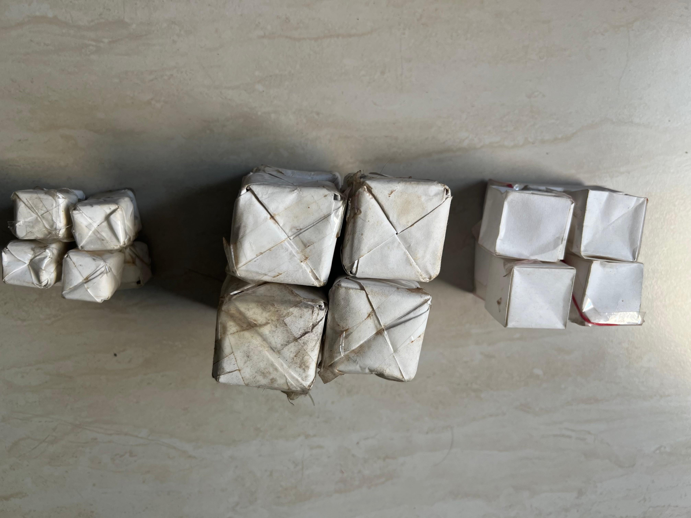
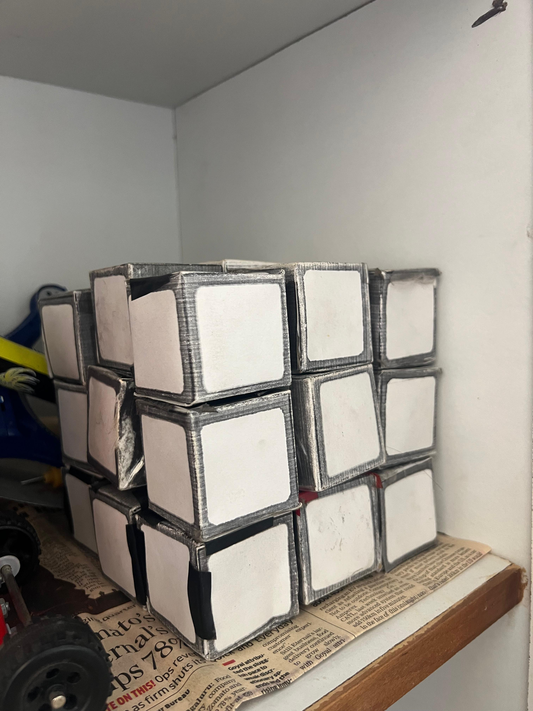
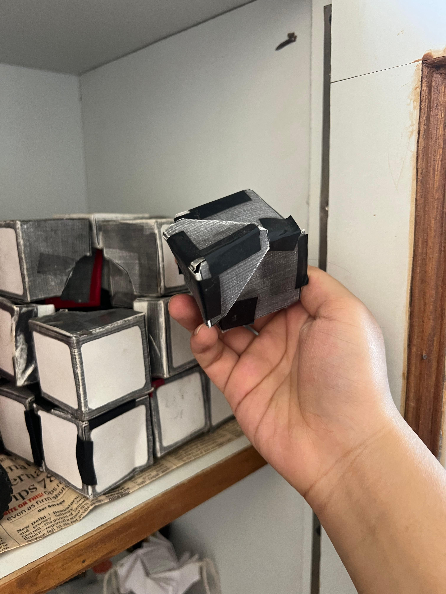
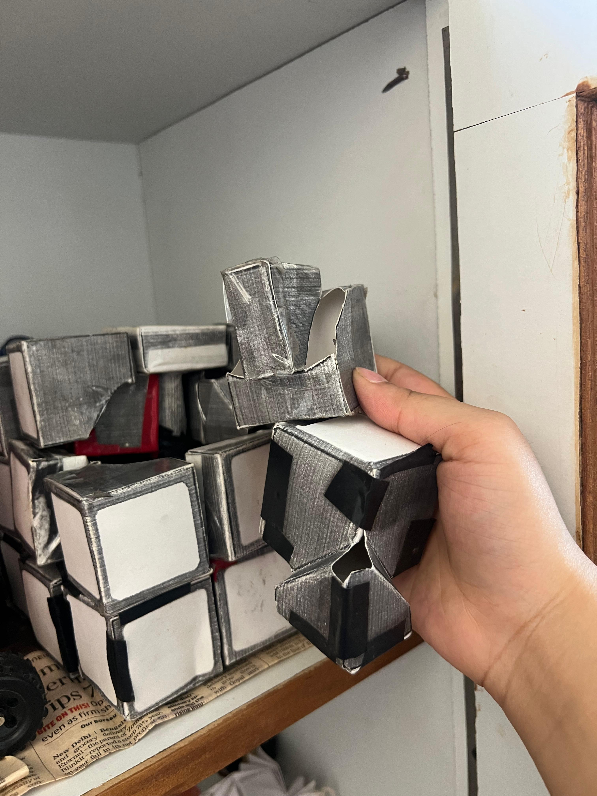

Crafts
Working Cubes

About This Project
I love speedcubing and also origami and working with paper! I found a tutorial to make singular cube pieces. I thought about threading them to create a 2 × 2 that could actually work, and it worked decently well!
Working 2 × 2 Cube
Working 3 × 3 Cube
For the 3 × 3, I followed a paper template to fold and create the edge and corner pieces along with the core. It ended up being very big, but it does move even though very slowly.


